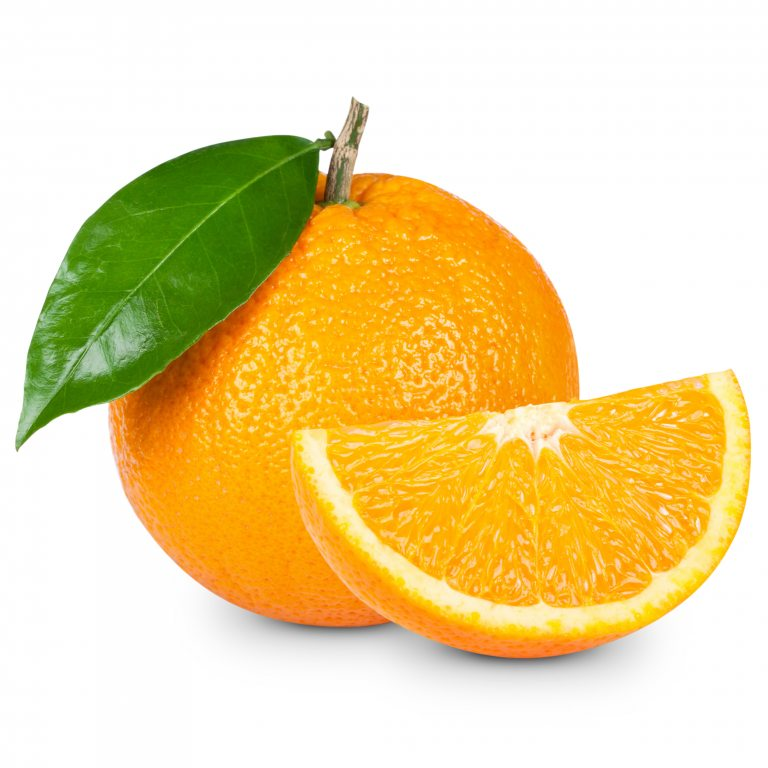
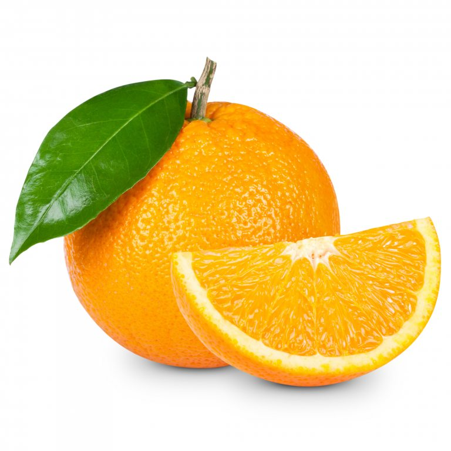

Children should eat at least 5 portions of a variety of fruit and vegetables a day. As a rough guide, 1 portion is the amount they can fit in the palm of their hand. Watch out for drinks that say "juice drink" on the pack as they're unlikely to count towards your 5 A Day and can be high in sugar.
 
